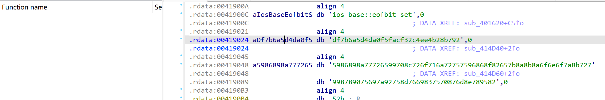
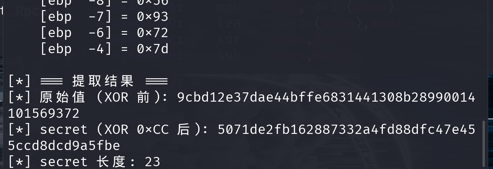
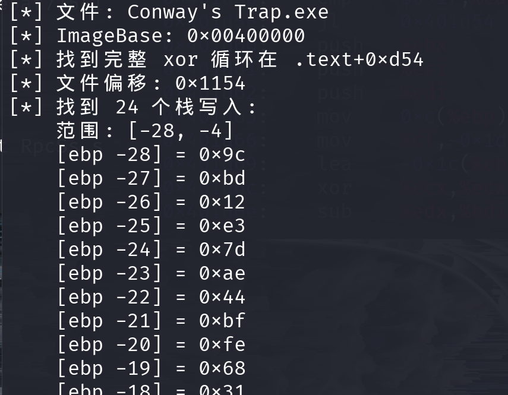

Conway's trap¶
比赛：ISCC 2026 方向：Reverse 作者：杨心凌
原稿中的邮箱、Flag 和公网地址已省略。题目二进制附件未随本次文件夹提供。
题目信息¶
- 题目描述： 程序要求输入 16 字节 seed，经多轮变换后与运行时解密的 secret 比较，并由相关数据构造动态 Flag。
- 附件与环境： 原稿提到
attachment-63.zip和caterpillar38.exe，但本次收到的文件夹中没有这些附件。 - 关键线索：
.data中保存着运行时堆指针；secret 在栈上经 XOR 循环解密。
解题思路¶
静态分析发现，输入的 16 字节 seed 会经过 5 轮按字节运算和整体循环移位。程序还使用一个 seed target 与 23 字节 secret 构造校验结果。
原稿通过动态调试发现 .data 固定偏移处保存的是堆指针，而不是 seed target 本身；secret 则在栈帧上经过 XOR 解密。因此转向运行时分析，读取 seed target 与解密后的 secret，再根据汇编推导逆变换。

分析与复现¶
单轮正向变换按两字节一组计算：
之后整体循环左移 1 字节。逆向时先整体循环右移，再按组计算：
对 seed target 连续执行 5 轮逆变换，得到原始 seed。随后按原稿给出的关系从 secret 重建 flag body：
调试记录截图中的 secret 数据已保留作为题解证据；Flag 输出已脱敏。


核心代码¶
#!/usr/bin/env python3
# -*- coding: utf-8 -*-
"""
基于内存提取常量恢复 Flag
"""
def byte_rol(val, n):
"""8-bit rotate left"""
return ((val << n) | (val >> (8 - n))) & 0xFF
def byte_ror(val, n):
"""8-bit rotate right"""
return ((val >> n) | (val << (8 - n))) & 0xFF
def invert_single_round(state):
"""
逆向单轮混淆。
正向流程：按2字节更新后整体左旋1字节。
逆向时先右旋，再反推原始2字节对。
"""
buf = bytearray(state)
# Step 1: 循环右移1字节
buf = buf[-1:] + buf[:-1]
# Step 2: 2字节分组逆运算
for offset in range(0, 16, 2):
u, v = buf[offset], buf[offset + 1]
y = byte_ror(v, 1) ^ u
x = (u - y) & 0xFF
buf[offset], buf[offset + 1] = x, y
return bytes(buf)
def retrieve_original_seed(target_hex):
"""对32字符hex执行5轮逆向，还原16字节seed"""
current = bytearray.fromhex(target_hex)
for _ in range(5):
current = invert_single_round(current)
return bytes(current)
def rebuild_flag_content(seed, secret):
"""
依据 secret 与 seed 重建 flag body。
汇编级推导：
tmp = ROR(secret[i] ^ 0xAA, 3)
tmp = (tmp - (i * 0x17 & 0xFF)) & 0xFF
out[i] = tmp ^ seed[i & 0x0F]
"""
payload = bytearray()
for index, s_val in enumerate(secret):
acc = byte_ror(s_val ^ 0xAA, 3)
acc = (acc - ((index * 0x17) & 0xFF)) & 0xFF
payload.append(acc ^ seed[index & 0x0F])
return bytes(payload)
if __name__ == "__main__":
# 以下常量通过 gdb 动态调试从进程内存中提取
MEMORY_SEED_TARGET = "df7b6a5d4da0f5facf32c4ee4b28b792"
MEMORY_SECRET_RAW = "5071de2fb162887332a4fd88dfc47e455ccd8dcd9a5fbe"
secret_bytes = bytes.fromhex(MEMORY_SECRET_RAW)
original_seed = retrieve_original_seed(MEMORY_SEED_TARGET)
flag_body = rebuild_flag_content(original_seed, secret_bytes)
print(f"[+] 原始 Seed: {original_seed.hex()}")
print(f"[+] Flag Body (hex): {flag_body.hex()}")
print("[+] Flag Body (ascii): [REDACTED]")
print("[+] Final Flag: [REDACTED]")
结果验证¶
在获得原始题目附件后，可运行脚本验证逆向 seed 与重建结果。原稿中的 Flag 内容不在本文展示。
复盘与经验¶
- 关键知识点： 字节级 ARX 变换、循环移位、XOR 解密、静态分析与动态调试结合。
- 容易踩的坑： 运行时指针不能当作静态字符串地址；编译优化可能导致静态模拟栈初始化结果不可靠。
- 材料限制： 题目 exe/zip 未随本次投稿提供。脚本中的常量来自 Word 原稿记录，完整复现仍需要赛事原始附件。
参考资料¶
- 原稿记录的 GDB 与 IDA 调试步骤；题目附件待补充。